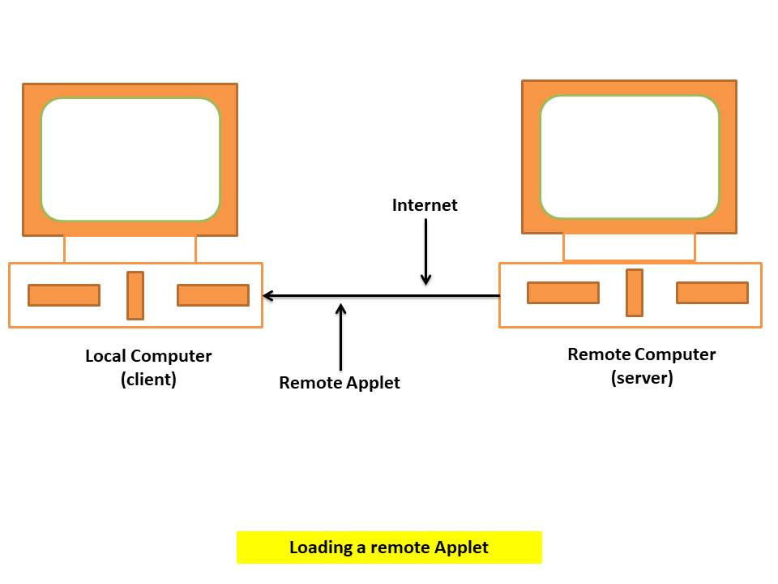

Java Applet
| Table Of Content |
|---|
Note: java.applet.package package has been supplicate in java 9 and later Version as that reason applet no longer widely used on web.
Introduction to Java Applet
Applets are small java programs that are primarily used in Internet Computing. They can be transported
over the internet from one computer to another and run using the Applet Viewer or any
web browser that supports java.
An Applet, like any application program, can do many things for us.
An Applet is a program written in the java programming language that can be include in an HTML page,
much in the same way an image is include in a page. When you use a java technology-enable browser's Java
Virtual Machine(JVM). For Example how to include an applet in an Html page, refer to this description of
the < APPLET > tag.
Types of Applet
We can embed applets into web pages in two ways. One, we can write our own applets and embed them into web pages. Second, we can download an applet remote computer system and then embed into web page.
- Local Applet: An Applet develop locally and stored in a local system is known local applet. when a web page is trying to find a local applet, it does not need to use the Internet and therefore the local system does not required the Internet connection.
- Remote Applet: An Remote applet is that which is developed by someone else and stored on a remote computer connected to the Internet. If our system is connected to the Internet we can download the remote applet onto our system via at the Internet and run it. 
Preparing to Write Applets
We have been creating simple java application program with a single main() method that creating object, set instance variable and ran methods. Here, creating applet class will not define main().
Before we try to write applets, we must make sure that java is installed properly and also ensure that either the java appletviewer or a java-enable browser is available. The steps involve in developing and testing the applet are:
- Building an applet code(.java file)
- Creating an executable applet(.class file)
- Designing a web page using HTML tags
- Preparing < APPLET > tag into the web page
- Incorporating < APPLET > tag into the web page
- Creating HTML file
- Testing the applet code.
A Simple Java Applet "Hello, World!"
It is essential that our applet code uses the services of two classes, namely, Applet and Graphics from java class library. The Applet class which is contained in the java.applet package provides life and behaviour to the applet through its method such as init(), start() and point().
/*Create a simple applet program to print "Hello World!"*/
import java.applet.Applet;
import java.awt.Graphics;
public class HelloWorld extends Applet {
public void paint(Graphics g) {
g.drawString("Hello world!", 50, 50);
}
}
Compiule the Applet : Save the above code in a file named HelloWorld.java. Open a terminal, native to the directory where you saved the file, and compile it using the javac command :
javac HelloWorld.java
Create HTML file: Create a file named Hello.html in the same directory that contains HelloWorld.class. This HTML file should contain the following text:
 `
`Run the Applet: HelloWorld.html file with a web browser that supports java applets.
Applet Life Cycle
Every java applet inherits a set of default behaviour from the applet class. As a result when an applet is loaded, it undergoes a series of changes in its state as shown figure.
- init() :
Applet enters the initialization state when it is first loaded. This achieved by calling the init() method of the Applet class. The applet is born. At this stage, we may do the following, if required.
- create oject needed by the applet
- Set up initial values
- Load images or fonts
- set up colors
- start() : Applet enters the running state when the system calls the start() method of Applet class. This Occur automatically after the applet is initialized. It is also called to restart an applet after it has been stopped. Note that, unlike init() method the start() method may be called more than once.
- paint() : Applet moves to the display state whenever it has to perform some output operations on the screen. This happens immediately after the applet enters into the running state. The paint() method is called to accomplish this task.
- stop() : An applet becomes idle when it is stopped from running. Stopping occurs automatically when we leave the page containing the currently running applet. we can also do calling the stop() method explicity.
- destroy() : An applet is said to be dead when it is removed from memory. This occurs automatically by invoking the destroy() method when we quit the browser.
How Applets differ from Application
Althrough both the applet and stand-alone application are javaa programs, there are significant difference between them. Applets are not full-featured application program. They are usually written to accomplish a small task or component of a task. Since they are usually designed for use on the internet, they impose certain limitation and restriction in their design.
- Applets do not use the main() method for initiating the execution of the code. Applets, when loaded, automatically cell certain methods of applet class to start and execute the applet code.
- Unlike stand-alone applications, applet cannot be run independently. They are run from inside the web page using a feature known as HTML tag.
- Applets cannot read from or write to the files in the local computer.
- Applets cannot communicate with other servers on the network.
- Applet cannot run any program from the local computer.